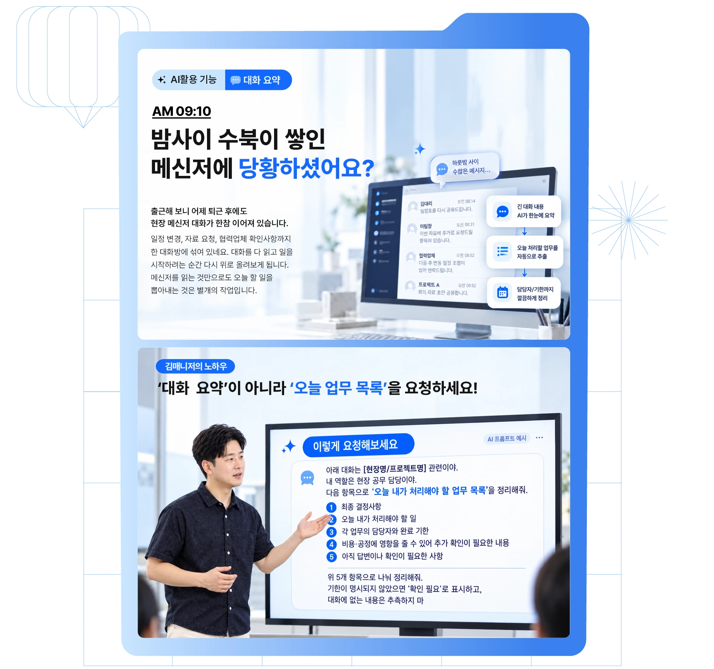
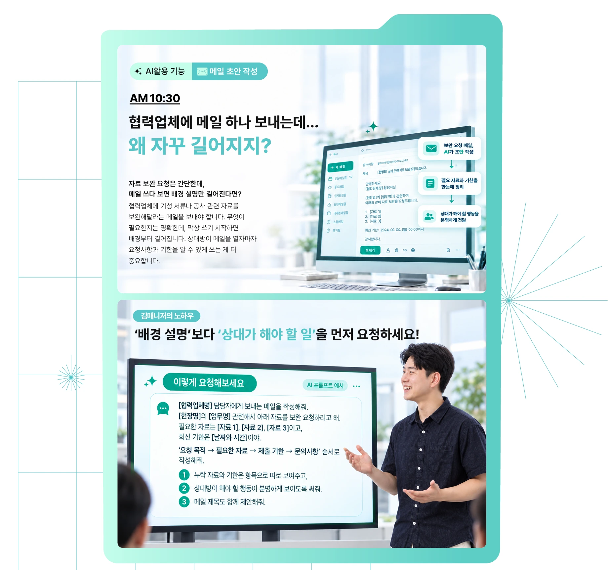
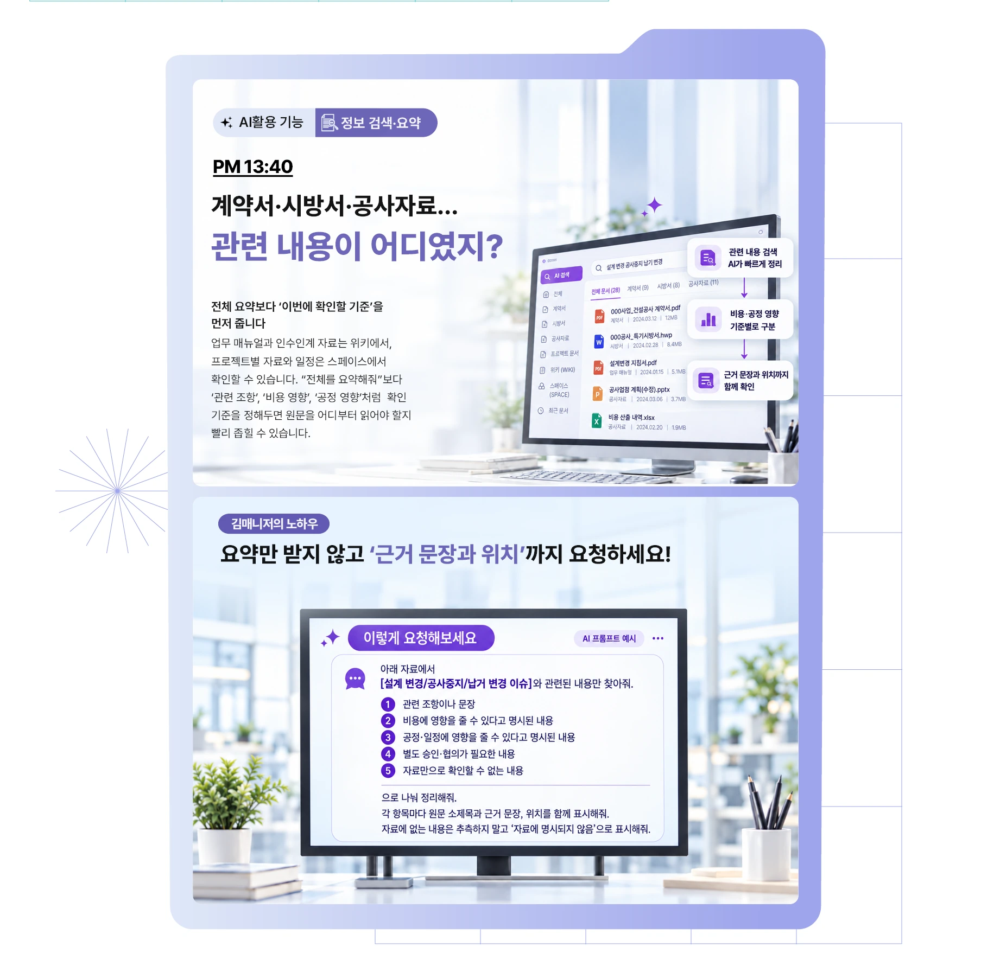
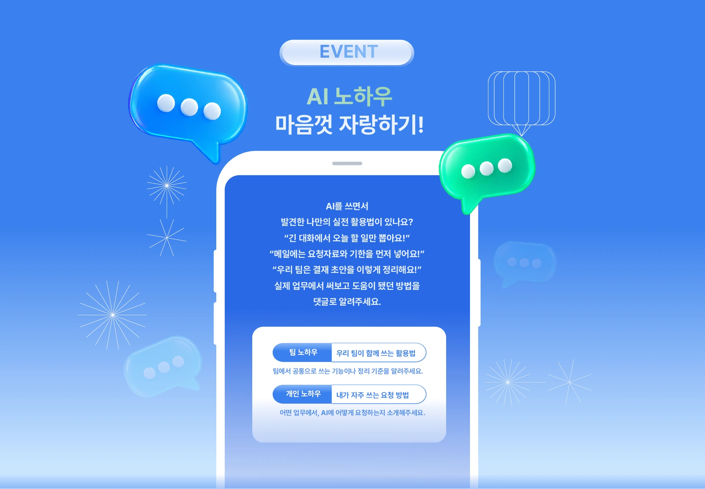

AI로 업무 디테일 UP
김 매니저의 실전 사용법
메일? 자료? 번역? 뭐가 문제야!
 AI 요약 | 김지효 매니저의 AI 활용법
AI 요약 | 김지효 매니저의 AI 활용법
LS일렉트릭 김지효 매니저는 K-LUSTER로 밤새 쌓인 메신저에서 할 일을 뽑고, 협력업체에 보낼 메일 초안을 작성한다. 계약서나 공사 자료를 살필 때는 관련 조항, 비용, 공정처럼 확인할 기준을 먼저 제시해 읽어야 할 범위를 좁힌다. 반복 업무에 드는 시간을 줄여 원문 확인과 판단, 조율에 더 집중하는 것이 핵심이다.
AI, 여러분은 업무에서 얼마나 활용하고 있나요? 중요한 건 기능을 많이 아는 것이 아니라, 어떤 일은 AI에 맡기고 어떤 일에 내가 집중할지 구분하는 것이죠. LS일렉트릭 김지효 매니저는 반복해서 읽고, 정리하고, 초안을 만드는 데 쓰던 시간을 K-LUSTER로 줄이고, 그만큼 판단과 조율이 필요한 핵심 업무에 더 집중하고 있습니다. 김 프로만의 AI 활용 X파일을 열어볼까요?

밤사이 수북이 쌓인 메신저에 당황하셨어요?
대화 요약
출근해 보니 어제 퇴근 후에도 현장 메신저 대화가 한참 이어져 있습니다. 일정 변경, 자료 요청, 협력업체 확인사항까지 한 대화방에 섞여 있네요. 대화를 다 읽고 일을 시작하려는 순간 다시 위로 올려보게 됩니다. 메신저를 읽는 것만으로도 오늘 할 일을 뽑아내는 것은 별개의 작업입니다.
김 매니저의 노하우 · ‘대화 요약’이 아니라 ‘오늘 업무 목록’을 요청하세요!

협력업체에 메일 하나 보내는데… 왜 자꾸 길어지지?
메일 초안 작성
자료 보완 요청은 간단한데, 메일 쓰다 보면 배경 설명만 길어진다면? 협력업체에 기성 서류나 공사 관련 자료를 보완해달라는 메일을 보내야 합니다. 무엇이 필요한지는 명확한데, 막상 쓰기 시작하면 배경부터 길어집니다. 상대방이 메일을 열자마자 요청사항과 기한을 알 수 있게 쓰는 게 더 중요합니다.
김 매니저의 노하우 · ‘배경 설명’보다 ‘상대가 해야 할 일’을 먼저 요청하세요!

계약서·시방서·공사자료… 관련 내용이 어디였지?
정보 검색·요약
전체 요약보다 ‘이번에 확인할 기준’을 먼저 줍니다 업무 매뉴얼과 인수인계 자료는 위키에서, 프로젝트별 자료와 일정은 스페이스에서 확인할 수 있습니다. “전체를 요약해줘”보다 ‘관련 조항’, ‘비용 영향’, ‘공정 영향’처럼 확인 기준을 정해두면 원문을 어디부터 읽어야 할지 빨리 좁힐 수 있습니다.
김 매니저의 노하우 · 요약만 받지 않고 ‘근거 문장과 위치’까지 요청하세요!

AI 노하우 마음껏 자랑하기!
AI를 쓰면서
발견한 나만의 실전 활용법이 있나요?
“긴 대화에서 오늘 할 일만 뽑아요!”
“메일에는 요청자료와 기한을 먼저 넣어요!”
“우리 팀은 결재 초안을 이렇게 정리해요!”
실제 업무에서 써보고 도움이 됐던 방법을
댓글로 알려주세요.
팀 노하우 · 팀에서 공통으로 쓰는 기능이나 정리 기준을 알려주세요.
개인 노하우 · 어떤 업무에서, AI에 어떻게 요청하는지 소개해주세요.
이 이야기의 키워드
이번 이야기는 어떠셨나요?
6DISCOVER

구자균 회장, “AI 전력난 해법은 지능형 DC 배전”
아시아 첫 CIRED 기조연설에서 지능형 DC 플랫폼의 미래를 소개합니다.

LS ELECTRIC의 역사를 가장 빠르게 살펴보는 법
LS ELECTRIC의 기업사를 6분으로 정리한 영상입니다.

숫자 너머의 시장을 읽고, 가격을 설계하다
사업총괄)마케팅팀 가격·데이터 Part